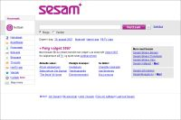
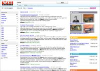
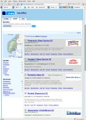

| Sesat > Home |
Get Sesat
Documentation
Development
Projects
Commons
Sitemap
Build your own federated search engine
Sesat is an open sourced Search Middleware with federation capabilities and a built-in search portal framework. Sesat enables a single user query to be dispatched to multiple information sources. These results can be analysed, weighted, federated, and clustered before being presented to the user according to declarative business rules.
- Sesat is the core technology used to power http://sesam.no and http://sesam.se, which are scandinavian search, news and directory sites that utilise a large number of data sources including Yahoo!, PicSearch, Solr (Lucene), Youtube, and enterprise search systems from FAST.
- Sesat makes it easy to build applications that look for information in many different places simultaneously. Sesat can connect to almost any kind of data source that can be accessed using Java - databases, search indexes, files, back office systems, web services, ESBs. Similar product examples are FAST Unity, WebFeat, DeepWeb Explorit, dbWIZ, Carrot2, and Raritan SIFT.
- Sesat takes care of all the complex tasks of communicating with multiple search indexes simultaneously, query- and result analysis, business rules application; leaving the developers to focus on other aspects of their application, such as presentation and usability.
- Sesat is developed in an open environment and released under the Affero General Public License. We invite you to participate in this open development project.
| Showcases | ||
|---|---|---|
|  sesam.no is the portal that initiated the development of Sesat. The presentation layer is made by front end developers using the Velocity templating language. Each search on sesam.no results in several parallel searches in different data sources. When all search results have been collected, Sesat invokes the relevant templates and displays the result to the user. Sesam.no uses technology from Yahoo!, FAST and PicSearch,. Sesam.no was launched november 2005. |
 vg.sesam.no is the largest newspaper in Norway, hosting Norways most popular website. By using Sesat, Sesam.no has created both a tv-guide and a news service for VG, all running on Sesam.no's platform, but with VG look-and-feel. |
 katalog.finn.no is the commercial catalogue to Norway's 4th largest website. |
{kind=link}
{kind=link}
{kind=link}
News
Children
Show Children
© 2007-2009 Schibsted ASA
Contact us